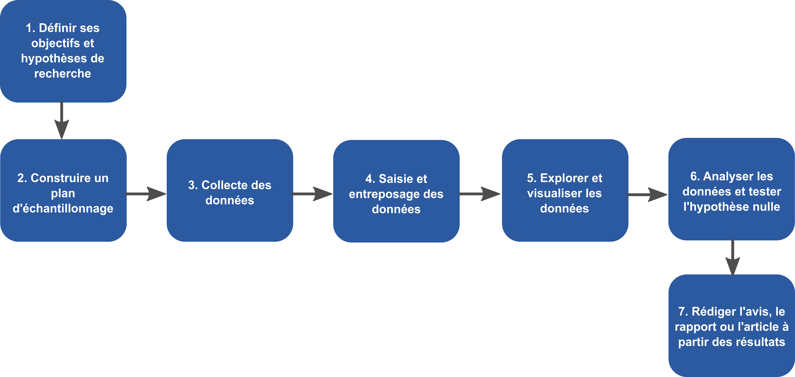

# Script volontairement non modulaire
data <- data.frame(
espece = paste0("Plante_", 1:10000),
site = rep(c("Sherbrooke", "Magog", "Laval", "Amqui"), length.out = 10000)
)
# Calcul du nombre d'observations par site
system.time({
result <- data.frame()
for (inst in unique(data$site)) {
n <- sum(data$site == inst)
result <- rbind(result, data.frame(site = inst, n_plantes = n))
}
})
result <- result[order(result$n_plantes, decreasing = TRUE), ]
print(result)9 Principes de reproductibilité
Ce chapitre présente les principes de base pour construire un projet d’analyse reproductible, maintenable et réutilisable. L’objectif est de partir d’un script fragile, puis de le transformer en un petit pipeline robuste.
9.1 Objectifs d’apprentissage
À la fin de ce tutoriel, vous serez en mesure de :
- reconnaître les limites d’un script monolithique ;
- découper un traitement en fonctions cohérentes ;
- expliciter un flux de données de type entrée → transformation → sortie ;
- automatiser un traitement avec un script maître ;
- ajouter des logs et des tests simples ;
- relier ces pratiques aux principes FAIR.
9.2 Pourquoi la reproductibilité ?
Un script « qui fonctionne une fois » n’est pas toujours un script reproductible. Les problèmes apparaissent souvent quand :
- le volume de données augmente (scalabilité) ;
- le contexte change (robustesse) ;
- le code doit être adapté à un nouveau jeu de données (réutilisabilité).
Une bonne stratégie consiste à observer ces échecs tôt, puis à restructurer le code progressivement.
9.3 1) Point de départ : script non modulaire
Limites à observer
- Le temps d’exécution augmente rapidement avec la taille des données.
- Le calcul, l’entrée de données et l’affichage sont mélangés.
- Une modification mineure (nom de colonne, nouvelles catégories, valeurs manquantes) demande plusieurs retouches.
9.4 2) Mettre le script sous stress
2.1 Scalabilité
data_big1 <- data[rep(seq_len(nrow(data)), times = 300), ]
data_big2 <- data[rep(seq_len(nrow(data)), times = 600), ]
data_big3 <- data[rep(seq_len(nrow(data)), times = 900), ]Relancez le calcul et comparez les temps d’exécution.
2.2 Robustesse
data_modif <- data_big1
data_modif[data_modif$site == "Sherbrooke", "site"] <- NARelancez le calcul et validez si le résultat reste cohérent.
2.3 Réutilisabilité
data2 <- data.frame(
espece = paste0("Plante_", 1:10000),
localisation = rep(c("Québec", "Ontario", "Nouvelle-Écosse", "Labrador"), length.out = 10000)
)Essayez d’adapter le code de calcul à data2 sans le réécrire en entier.
9.5 3) Séparation des responsabilités
Le principe clé est simple : une fonction = une responsabilité.
simu_data <- function(n_rep, site_col = "site", espece_col = "espece") {
df <- data.frame(
espece = paste0("Plante_", 1:10000),
site = rep(c("Sherbrooke", "Magog", "Laval", "Amqui"), length.out = 10000)
)
names(df)[names(df) == "site"] <- site_col
names(df)[names(df) == "espece"] <- espece_col
df[rep(seq_len(nrow(df)), times = n_rep), ]
}
compte_especes_par_site <- function(df, site_col) {
agg <- aggregate(df[[site_col]], by = list(site = df[[site_col]]), FUN = length)
names(agg)[2] <- "n_plantes"
agg[order(agg$n_plantes, decreasing = TRUE), ]
}Cette séparation facilite la lecture, la maintenance et les tests.
9.6 4) Flux de données explicite

Un pipeline minimal suit toujours la logique suivante :
- Entrée : lire ou générer les données ;
- Transformation : nettoyer, agréger, analyser ;
- Sortie : produire une table, une figure ou un fichier.
Cette structure réduit les erreurs silencieuses et simplifie le débogage.
9.7 5) Automatiser avec un script maître
Le script maître orchestre les étapes et regroupe les paramètres en haut du fichier. Il ne fait aucun calcul. Un fichier d’automatisation est un fichier qui contient un ensemble de directives qui sont exécutées par l’ordinateur, les instructions et leurs dépendances sont spécifiées. Ce fichier doit pouvoir être exécuté avec la commande source().
Note
Les paramètres sont positionnés en haut du script. Les valeurs par défaut, les paramètres, sont explicités et facilement modifiables pour favoriser la traçabilité et la maintenance du code.
# Paramètres
site_col1 <- "site"
espece_col1 <- "espece"
n_rep1 <- 1000
site_col2 <- "localisation"
espece_col2 <- "espece"
n_rep2 <- 2000
# Pipeline
df1 <- simu_data(n_rep = n_rep1, site_col = site_col1, espece_col = espece_col1)
res1 <- compte_especes_par_site(df1, site_col = site_col1)
df2 <- simu_data(n_rep = n_rep2, site_col = site_col2, espece_col = espece_col2)
res2 <- compte_especes_par_site(df2, site_col = site_col2)
print(res1)
print(res2)9.8 6) Ajouter des logs
Les logs permettent de suivre l’exécution et de localiser rapidement une erreur.
log_message <- function(msg) {
cat(Sys.time(), "-", msg, "\n")
}
log_message("Lecture des données")
authors <- simu_data(n_rep1)
log_message("Calcul des indicateurs")
result <- compte_especes_par_site(authors, site_col1, espece_col1)
log_message("Fin du script")Types de messages
- INFO : information générale sur l’exécution avec
cat(),print()oumessage() - WARNING : avertissement sur un problème potentiel. Le script continue malgré un problème (ex. données manquantes) avec
warning() - ERROR : message d’erreur indiquant un problème critique. Le script s’arrête (ex. division par zéro) avec
stop()oustopifnot()
9.9 7) Ajouter des tests simples
L’ajout de tests permet de vérifier que les fonctions font ce qu’elles sont censées faire et de détecter les erreurs rapidement. On peut écrire des tests unitaires simples avant la conception d’une fonction pour guider son développement. Le but est alors de s’assurer que la fonction répond aux attentes dès le départ. Des tests peuvent aussi être ajoutés après la conception pour vérifier le fonctionnement de la fonction dans divers cas d’utilisation.
Pourquoi tester ?
- Détecter les erreurs tôt
- Vérifier que les fonctions font ce qu’elles promettent
- Protéger le code contre les changements futurs
# Exemple simple de fonction ne produisant pas les résultats attendus
est_egal <- function(a, b) {
a == b
}
x = 0.1
y = 0.2
z = x+y
est_egal(z, 0.3) # Résultat attendu : TRUEDes erreurs surprenantes peuvent survenir et introduire des bugs difficiles à détecter. Il est important de tester les fonctions pour s’assurer qu’elles produisent les résultats attendus. Ici, le résultat est FALSE en raison de la manière dont les nombres à virgule flottante sont représentés en informatique, ce qui peut entraîner des erreurs d’arrondissement. Ce problème peut être évité en utilisant des fonctions de comparaison adaptées, comme all.equal()
Exemple de test simple
Un test peut être ajoutée à l’intérieur d’une fonction ou dans une fonction de test séparé. Dans l’exemple suivant, on crée un jeu de données de test avec des résultats connus, puis on utilise stopifnot() pour vérifier que les résultats obtenus correspondent aux attentes.
test_compte_especes <- function(df_test) {
res <- compte_especes_par_site(df_test)
stopifnot(res$n_plantes[res$site == "X"] == 2) # `stopifnot()` vérifie que la condition est vraie, sinon elle arrête l'exécution et affiche un message d'erreur
stopifnot(res$n_plantes[res$site == "Y"] == 1)
log_message("Test *compte_especes_par_site* passé avec succès") # Retourne un message de succès si les tests sont passés
}
df_test <- data.frame(
espece = c("A", "B", "C"),
site = c("X", "X", "Y")
)
test_compte_especes(df_test)Des libraires spécialisées comme testthat permettent d’écrire des tests plus complexes et de les organiser de manière plus structurée, mais l’approche de base avec stopifnot() est un bon point de départ pour comprendre l’importance des tests dans la reproductibilité du code.
9.10 8) Lien avec les principes FAIR
- Findable : code et données faciles à retrouver.
- Accessible : accès clair (dépôt, licences, consignes).
- Interoperable : formats standards et lisibles.
- Reusable : documentation et structure suffisantes pour réutiliser le travail.
Note
Dans ce cours, FAIR complète les bonnes pratiques de pipeline, documentation et versionnement déjà en place.
9.11 Synthèse — De script fragile à pipeline reproductible
Un pipeline reproductible repose sur :
- Une architecture modulaire
- Un flux de données explicite
- Des paramètres visibles et versionnés
- Des logs pour suivre l’exécution
- Des tests pour sécuriser l’évolution du code
Qu’est-ce qui, dans votre code, protège votre « vous du futur » dans 6 mois ?